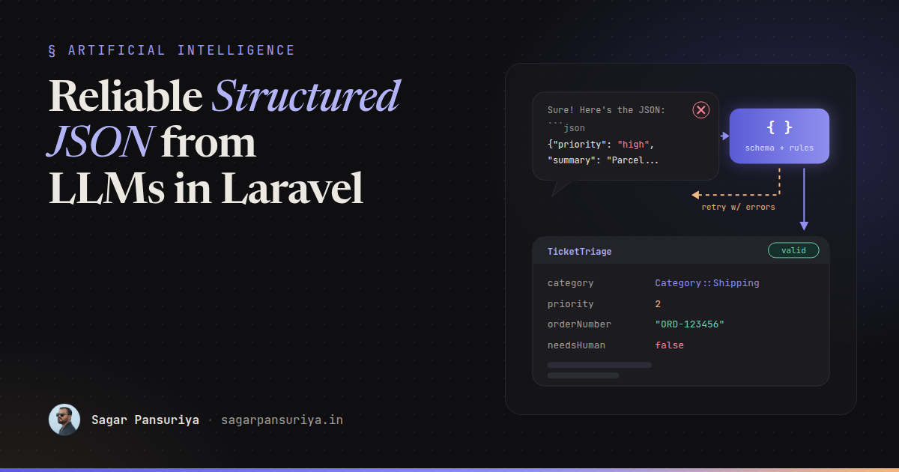
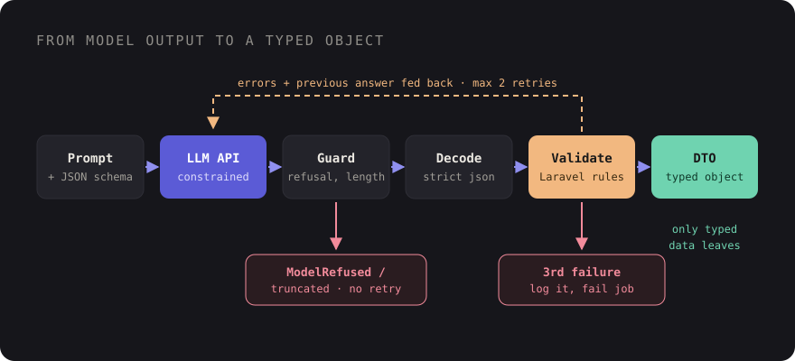

Reliable Structured JSON from LLMs in Laravel


Every team that adds an LLM feature to a Laravel app hits the same wall sooner or later. The prompt says
"respond only with JSON". It works in the demo. Then in production, one response in a few hundred comes back
wrapped in a Markdown code fence, or with a friendly "Sure! Here's the JSON:" in front, or with
priority set to "high" when your code expects an integer. Your
json_decode returns null, and a queue job fails at 3 a.m.
The fix isn't a better-worded prompt. It's treating the model like any other unreliable external input:
constrain it where you can, validate everything, retry with useful feedback, and only let typed objects into
the rest of your app. This post walks through that pipeline with plain Laravel: the HTTP client, the
Validator, a DTO, and Http::fake for tests.
The example: triaging support messages
Say a customer writes in, and we want the model to turn their message into something our app can route:
category: one ofbilling,shipping,technical,otherpriority: an integer from 1 (urgent) to 4 (low)summary: one sentence for the agent dashboardorder_number: a string likeORD-123456, ornullneeds_human: a boolean
Small, boring, and exactly the kind of task where a wrong type breaks things downstream.
Step 1: use the provider's structured output feature
Most major LLM APIs now offer some way to constrain output to a JSON schema. The names differ ("structured outputs", "JSON schema mode", "response format", or defining a single tool whose input schema is your shape), but the idea is the same: you send a JSON Schema with the request, and the provider constrains generation so the response matches it.
This is a big step up from "please respond in JSON", and you should always use it when it's available. But it's not a replacement for validation, for three reasons:
- A schema can say
priorityis an integer from 1 to 4. It can't say "priority 1 only if the customer mentions an outage". Business rules live in your code. - Support for schema keywords varies by provider. Some ignore or reject things like
pattern,minimumor string formats. - Responses can still be cut off, refused or empty. A truncated response isn't valid JSON, whatever the schema said.
Define the schema once, as a PHP array, next to the code that uses it:
// app/Ai/Schemas/TicketTriageSchema.php
final class TicketTriageSchema
{
public static function get(): array
{
return [
'type' => 'object',
'properties' => [
'category' => ['type' => 'string', 'enum' => ['billing', 'shipping', 'technical', 'other']],
'priority' => ['type' => 'integer', 'description' => '1 = urgent, 4 = low'],
'summary' => ['type' => 'string', 'description' => 'One sentence, max 280 characters'],
'order_number' => ['type' => ['string', 'null'], 'description' => 'Format ORD-123456'],
'needs_human' => ['type' => 'boolean'],
],
'required' => ['category', 'priority', 'summary', 'order_number', 'needs_human'],
'additionalProperties' => false,
];
}
}Two details make this portable. Every property is listed in required, with "optional" values
expressed as nullable types instead, and additionalProperties is false. Some
strict modes (OpenAI's, for example) require exactly this, and it's a good habit anyway: you always get the
same keys back.
Step 2: a thin, provider-agnostic client
I keep the provider-specific bits in one small class. The example below uses the OpenAI-compatible chat completions shape because many hosted providers and local servers accept it. If yours differs, only this class changes. Check your provider's docs for the exact field names.
// app/Ai/LlmClient.php
use Illuminate\Support\Facades\Http;
final class LlmClient
{
public function structured(array $messages, string $name, array $schema): LlmResult
{
$response = Http::withToken(config('services.llm.key'))
->timeout(60)
->retry(2, 500) // connection errors and failed HTTP responses, not bad JSON
->post(config('services.llm.url').'/chat/completions', [
'model' => config('services.llm.model'),
'messages' => $messages,
'response_format' => [
'type' => 'json_schema',
'json_schema' => ['name' => $name, 'strict' => true, 'schema' => $schema],
],
]);
return new LlmResult(
content: $response->json('choices.0.message.content'),
finishReason: $response->json('choices.0.finish_reason'),
refusal: $response->json('choices.0.message.refusal'),
);
}
}LlmResult is a tiny readonly class holding those three values. The point is that everything
above this layer deals with "content, why it stopped, and whether the model declined", never with a
provider's raw response.
Step 3: validate like it's user input
Because it is. Laravel's Validator is perfect for this, and it lets you express the rules a schema can't:
// app/Ai/TicketTriager.php (excerpt)
use Illuminate\Support\Facades\Validator;
use Illuminate\Validation\Rule;
private function rules(): array
{
return [
'category' => ['required', Rule::enum(Category::class)],
'priority' => ['required', 'integer', 'between:1,4'],
'summary' => ['required', 'string', 'max:280'],
'order_number' => ['present', 'nullable', 'string', 'regex:/^ORD-\d{6}$/'],
'needs_human' => ['required', 'boolean'],
];
}Before validation, you need an array. Decode strictly, so malformed JSON becomes an error message you can
send back to the model instead of a silent null:
/** @return array{0: ?array, 1: list<string>} */
private function decodeAndValidate(?string $content): array
{
try {
$data = json_decode($content ?? '', true, flags: JSON_THROW_ON_ERROR);
} catch (JsonException $e) {
return [null, ['The response was not valid JSON: '.$e->getMessage()]];
}
if (! is_array($data)) {
return [null, ['The response must be a JSON object.']];
}
$validator = Validator::make($data, $this->rules());
return $validator->fails()
? [null, $validator->errors()->all()]
: [$validator->validated(), []];
}
Step 4: retry with the errors, not blindly
When validation fails, don't just send the same request again. Send the model its own answer and the exact validation errors. Models are good at fixing a specific, named mistake, and this usually succeeds on the first retry.
public function triage(string $message): TicketTriage
{
$messages = [
['role' => 'system', 'content' => $this->instructions()],
['role' => 'user', 'content' => $message],
];
foreach (range(1, 3) as $attempt) {
$result = $this->llm->structured($messages, 'ticket_triage', TicketTriageSchema::get());
$this->guardAgainstRefusalOrTruncation($result);
[$data, $errors] = $this->decodeAndValidate($result->content);
if ($errors === []) {
return TicketTriage::fromArray($data);
}
$messages[] = ['role' => 'assistant', 'content' => (string) $result->content];
$messages[] = ['role' => 'user', 'content' =>
"Your JSON failed validation:\n- ".implode("\n- ", $errors)."\nReturn the corrected JSON only."];
}
throw new StructuredOutputFailed('Triage failed validation after 3 attempts.');
}Cap the attempts. Two retries is plenty. If a third attempt still fails, the input is probably ambiguous or the task is badly specified, and more retries just burn tokens. Log the raw content and the errors when you give up, because those logs are how you improve the prompt.
Step 5: handle refusals and partial output separately
Not every failure is a validation problem, and retrying with "fix your JSON" makes no sense for these:
- Truncation. If the response stopped because it hit the token limit (a
finish_reasonoflengthin OpenAI-compatible APIs), the JSON is incomplete. Raise the output limit or ask for less, such as a shorter summary. Don't try to repair half an object. - Refusals. Some APIs return a refusal in a separate field rather than in the content. Treat it as a distinct outcome: route the ticket to a human, don't retry the same input.
- Empty content. Treat it like a transport error: one retry, then fail.
private function guardAgainstRefusalOrTruncation(LlmResult $result): void
{
if ($result->refusal) {
throw new ModelRefused($result->refusal);
}
if ($result->finishReason === 'length') {
throw new StructuredOutputFailed('Response truncated at the token limit.');
}
}Separate exception types mean your job or controller can decide what each one means for the user. That decision matters as much as the parsing. I wrote more about showing these states honestly in the UI in UX patterns for trustworthy AI features.
Step 6: map to a DTO and stop passing arrays around
Once data is valid, turn it into a typed object immediately. The rest of your app should never see the raw array:
enum Category: string
{
case Billing = 'billing';
case Shipping = 'shipping';
case Technical = 'technical';
case Other = 'other';
}
final readonly class TicketTriage
{
public function __construct(
public Category $category,
public int $priority,
public string $summary,
public ?string $orderNumber,
public bool $needsHuman,
) {}
public static function fromArray(array $data): self
{
return new self(
category: Category::from($data['category']),
priority: (int) $data['priority'],
summary: $data['summary'],
orderNumber: $data['order_number'],
needsHuman: (bool) $data['needs_human'],
);
}
}Now a controller or job works with $triage->category === Category::Shipping, your IDE
autocompletes it, and static analysis catches mistakes. The LLM is just one way to construct this object.
Tests, seeders and a manual "triage this ticket" form can build it too.
Step 7: test it without calling a model
Because all traffic goes through Laravel's HTTP client, Http::fake covers the whole
pipeline. A sequence lets you test the retry path: a bad response first, then a good one.
use Illuminate\Http\Client\Request;
use Illuminate\Support\Facades\Http;
function chatResponse(array $json, string $finish = 'stop'): array
{
return ['choices' => [[
'message' => ['content' => json_encode($json), 'refusal' => null],
'finish_reason' => $finish,
]]];
}
it('feeds validation errors back and returns a DTO', function () {
$valid = ['category' => 'shipping', 'priority' => 2, 'summary' => 'Parcel not delivered.',
'order_number' => 'ORD-123456', 'needs_human' => false];
Http::fake(['*' => Http::sequence()
->push(chatResponse([...$valid, 'priority' => 9]))
->push(chatResponse($valid)),
]);
$triage = app(TicketTriager::class)->triage('My order ORD-123456 never arrived.');
expect($triage->category)->toBe(Category::Shipping)
->and($triage->priority)->toBe(2);
Http::assertSentCount(2);
Http::assertSent(fn (Request $request) =>
str_contains(json_encode($request['messages']), 'failed validation'));
});Add one test per failure path: invalid JSON, truncation, refusal, and three bad responses in a row. They run in milliseconds and cost nothing. For judging the quality of real model answers, you need a different kind of test, but for the plumbing, fakes are exactly right.
A checklist to keep
- Use the provider's JSON schema feature whenever it exists. Never rely on "respond in JSON" alone.
- Define schemas as PHP arrays: all keys required, nullable for optional, no additional properties.
- Keep provider-specific request and response shapes in one small client class.
- Decode with
JSON_THROW_ON_ERRORand validate with Laravel's Validator, including business rules the schema can't express. - Retry at most twice, sending the model its answer and the exact errors.
- Handle refusals and truncation as separate outcomes, not validation failures.
- Map to a readonly DTO with enums straight after validation.
- Cover every path with
Http::fakeand a response sequence.
None of this is specific to AI, and that's the point. If you already know how to handle a flaky third-party API or a messy form submission in Laravel, you already know how to get reliable JSON out of a model. You just have to stop trusting it.
Discussion